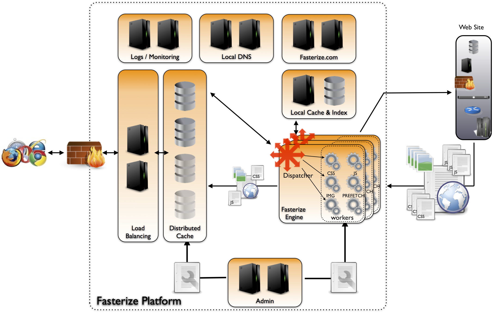
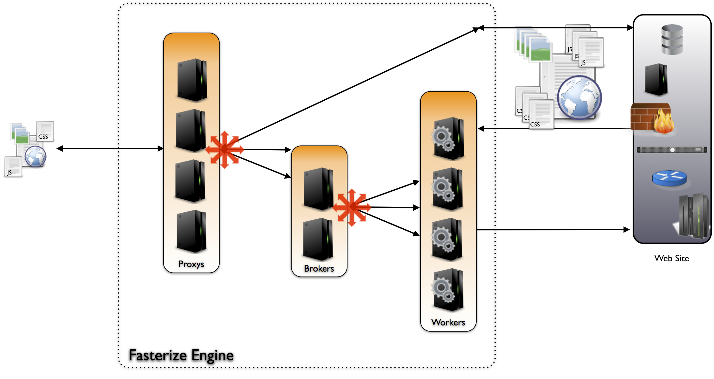
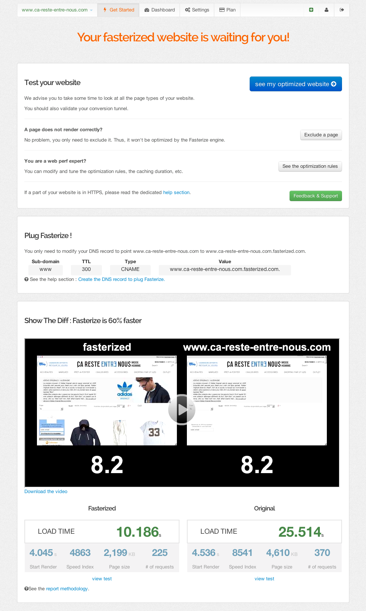

Formation
partenaire
Présentation Générale
Fonctionnement général

Architecture générale
Fonctionnement du moteur
Noms de domaine
(automatiquement créés)
- fasterized.com
- par défaut pointe sur la plateforme (mode démo)
- si une config existe, pointe sur la plateforme ou sur l'origine
- fasterized.net
- pointe toujours sur la plateforme
- fasterize.it
- pointe sur les serveurs d'origine
- s0.frz.io / s1.frz.io
- domaines "shardés", utilisés pour les objets statiques
- pointent sur la plateforme ou un CDN
les règles d'optimisation
Moins de requêtes
Des requêtes et réponses moins lourdes
Des objets chargés différemment
Tour de l’interface
Page de bienvenue
- Test du site avec le mode preview
- Instructions de branchement
- Résultat des tests (+liens)
- Visible tant que le site n'est pas branché
Page de bienvenue
Dashboard
- Arrêter les optimisations en cas de problème
- Désactiver la redirection DNS*
- Suivi de la consommation
- Vider le cache de Fasterize
Configuration
Permet de configurer
- Règles
- Domaines
- Cache
- Exclusions
- Redirections
En mode avancé
- Tracking de performance Fasterize & widgets
- A/B Test
- Tests de non-régression visuelle
Configuration : règles
- Activation/désactivation des règles
- Options possibles : icône
- Exclusion d'URL pour une règle : icone

Configuration : domaines
- Configuration de l'origine
- Ajout de domaine secondaire (objets statiques)

Configuration : cache
Redéfinition des règles de mise en cache pour une URL

Configuration : exceptions
- Permet de ne pas optimiser une ou plusieurs URL.
- Exemples :
- backofice
- tracking
Configuration d’un site pas à pas
Ajouter une configuration
Tester le site
- Utiliser le mode preview : http://www.monsite.com.fasterized.com
- Vérifier les vidéos WebPageTest
- Vérifier les tests WebPageTest
Utiliser les paramètres de debug
Ajouter les paramètres suivants dans l'URL
?frz-all=falsepour tout désactiver sur une page?frz-[rule]=falsepour désactiver une règle sur une page?frz-[rule]-[option]=falsepour désactiver une option d'une règle sur une page?frz-persist-[rule]=falsepour désactiver une règle sur une page et sur la session- Voir doc en ligne pour la liste des règles
Activer / Désactiver des règles
Les règles qui posent problème sont en général
- DeferJS
- Concaténation
- Minification
- Lazyloading
Les règles peuvent désactivées pour des pages données ou globalement
Exclure une ou plusieurs URL qui pose problème au niveau global
Ajouter un nom de domaine secondaire
Si le site possède une partie sécurisée (HTTPS)
- Contacter le support pour ajouter un certificat
- Envoyer le certificat
Branchement du site
- Faire les dernières vérifications (tunnel d'achat, partie sécurisée)
- Faire la bascule des DNS
Gestion des cas avancés
Le rapport ne montre pas d’amélioration de performances
Cela peut venir de plusieurs facteurs
- Il y a une redirection vers le domaine d'origine du client (2 fois le même test)
- Les images ne sont pas cachées / optimisées (cf. )
- La fin de la vidéo est mal calculée
- Le site est déjà optimisé ou très léger
Images non optimisées
- Pas de cache forcer le cache s'il n'est pas mis par défaut
- Images sur un autre domaine ajouter un domaine statique dans la configuration
Redirection / Bare domain (domaine "nu")
- Fasterize ne prend pas en compte les bares domains
- Possibilité de lancer un test en contactant le support